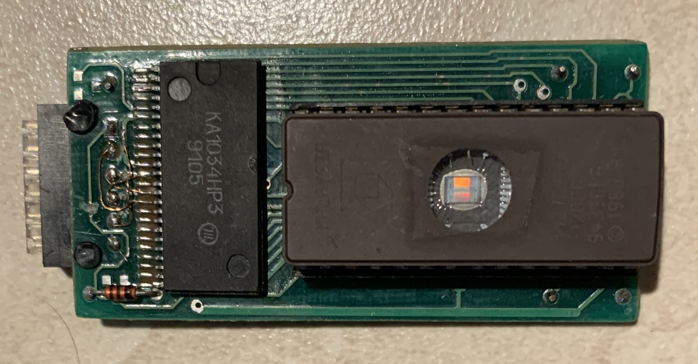
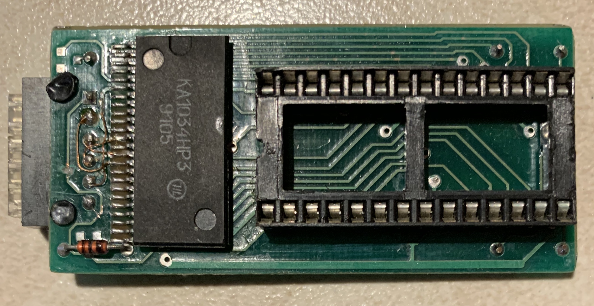
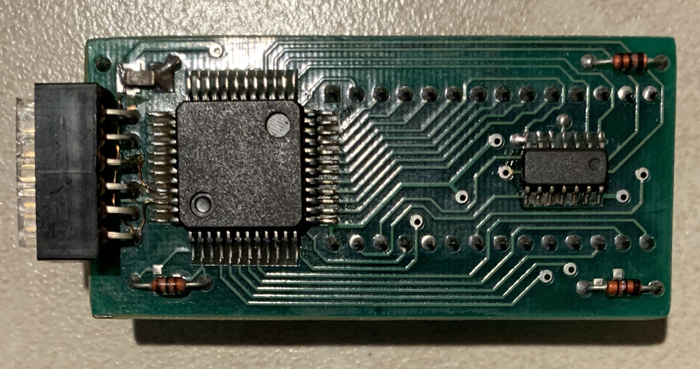
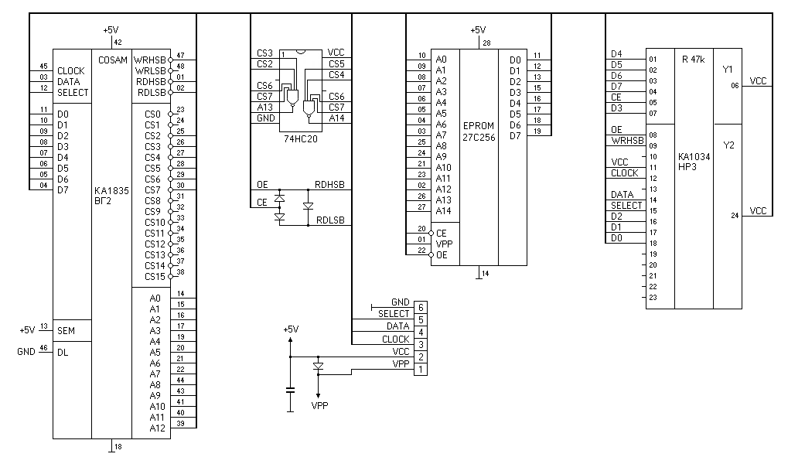

| Indeks | English version |
Autorem poni¿szych zdjêæ i schematu jest Mahmoud Yassine.
Modu³ przechowuje oprogramowanie dla spektrometru promieniowania gamma, sterowanego mikrokomputerem Elektronika MK-90. Jest równowa¿ny konwencjonalnym MPO-10, z tym ¿e pamiêci RAM zosta³y zast±pione pamiêci± EPROM z uk³adem dopasowuj±cym.



